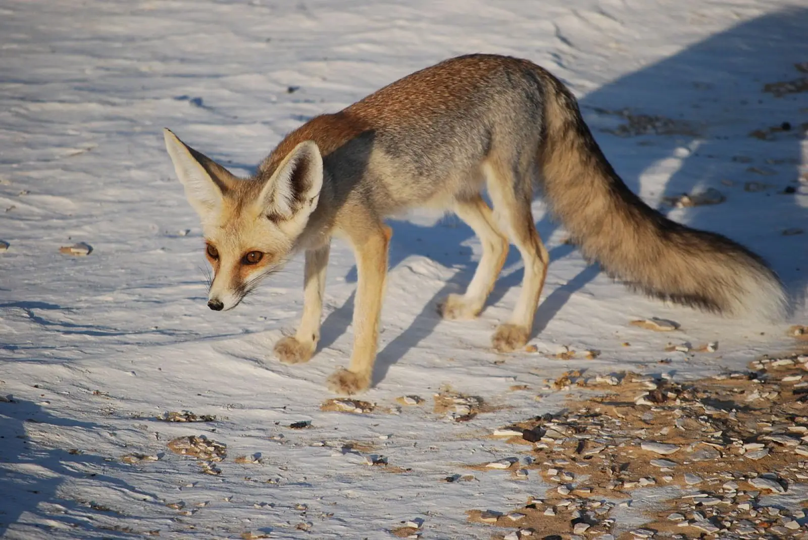
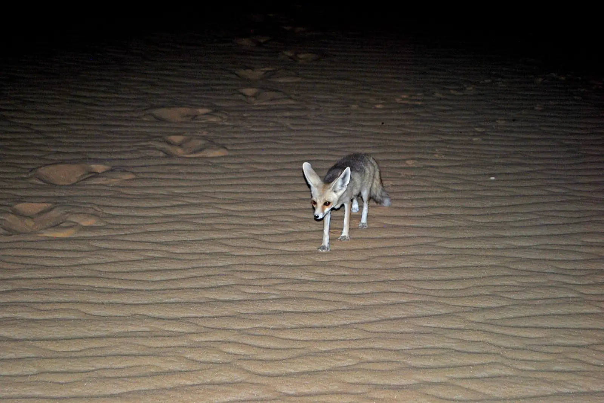

The Ruppell's fox lives from Morocco, to Egypt and the Middle East, to parts of southwest Asia like Pakistan.
Their diet consists of rodents, lizards, birds, roots fruits, and plants like desert succulents.
It is named after Eduard Ruppell, a German naturalist. It can also be called the sand fox.
In certain areas of their range, they compete with red foxes for food.


Photo by unknown from unknown
Photo by unknown from unknown